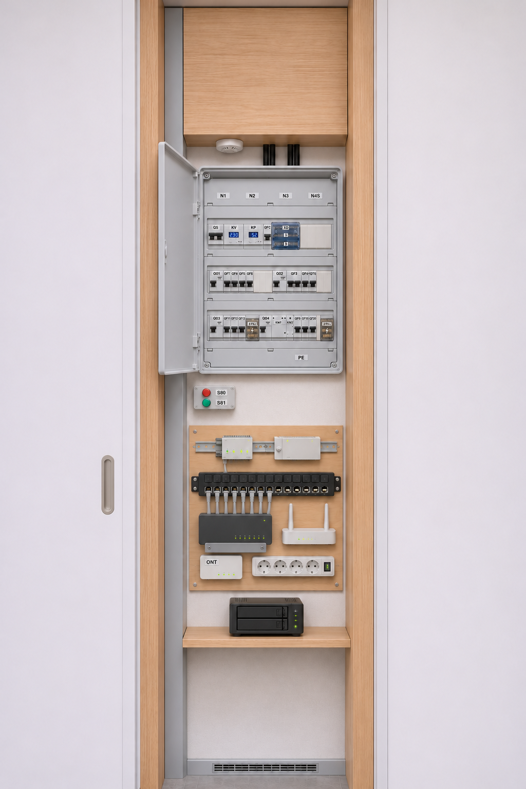

Вариант 1 · Слаботочка
Техническая секция
Техническая секция 60 см в прихожем шкафу. Антресоль перепроверить после утверждения чистой высоты: 270 см после нового пола не подтверждены.
Реалистичный вид секции


Размерная схема
Отметки от чистого пола. 264 см в размерной схеме — расчётный пример, не обмер; щит +154…220 и сеть +64…125 см пока сохраняем, антресоль адаптируем к обмеру.
Оборудование секции
| Элемент | Требование |
|---|---|
| Кнопочный пост SB0 / SB1 | на 135–141 см под щитом, выше слаботочной панели; кнопки «Стоп» NC и «Возврат» NO. Управление от QFC, кабель в силовом коробе |
| Монтажная панель: фанера 18 мм 49×61 см на брусках 4 см, две DIN-рейки | на стене секции на 64–125 см; на ней сетевое оборудование, за ней слаботочные кабели. Проверить габариты с корпусом щита |
| Силовой короб 100×60 от пола до потолка | слева в секции: кабели из пола в щит и из щита к свету на потолке |
| Автономный пожарный датчик | на стенке секции или под антресолью |
| Патч-панель Cat6 1U на 16–24 порта на настенном кронштейне | на 103–112 см: 12 кабелей сейчас, остальные порты в запасе |
| Коммутатор на 16 портов 1 Гбит с PoE для точек доступа | на панели на шурупах через проушины или на DIN-рейке; можно без PoE и два PoE-инжектора на DIN |
| Роутер | на панели рядом с коммутатором; Wi-Fi в нём не нужен: раздают точки доступа |
| Оптический терминал провайдера | ставит провайдер |
| Удлинитель на 4–6 розеток | на панели, включён в обычную розетку QF8 |
| Домашний сервер: NAS на 2 диска | на полке 46 см; питание QF8 |
| Две точки доступа Wi-Fi 6 на потолке | коридор и кухня-гостиная, одна сеть по всей квартире |
| Контроллер защиты от протечек | 6 датчиков и 4 крана с приводом, от обычной линии QF8; контроллер с 4 выходами или совместимым расширением |
Одежда 2,26 м + технический корпус 0,60 м = 2,86 м прихожего шкафа. Корпус техники не покупается повторно в метраже одежды.
Доступ и тепло
- Слева — силовой короб, справа за панелью — Cat6 и низковольтные провода. Защищённые вводы, закреплённый запас, бирки на каждом конце.
- Крепить коммутатор и NAS способом из инструкции. Наружные 60 см не равны внутренним: панель 483 мм, кронштейн и радиусы кабеля должны реально пройти.
- Для 100 Вт тепла и перегрева воздуха не более 10 °C нужно около 30 м³/ч воздуха. Это ориентир, не подтверждение естественной вентиляции через щели.
- Нижние/верхние решётки не закрывать одеждой и дверью. При закрытой двери измерить температуру под нагрузкой NAS/PoE; если превышены лимиты — увеличить сечения или добавить тихую вытяжку.
- От одежды — сплошная перегородка. Материал полки, монтажной панели и коробов согласовать с электропроектом; фанера не является негорючей.
- Щит и SB0/SB1 доступны без снятия сети. Вода/фильтры здесь не размещаются. ИБП и батарей нет.